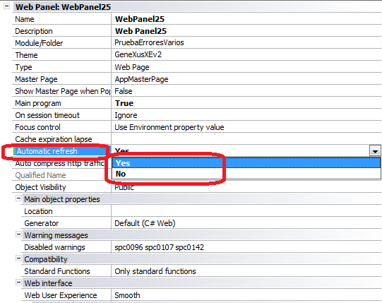
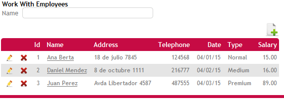
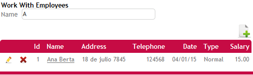

The refresh behavior of the Grid control depends on the Automatic refresh property. An "Automatic refresh" occurs when changes are made to any variable in the web form that is used in the Refresh, Load event or conditions.
There is no restriction to the grid, which can be bound to an SDT as well.
The variable in the form that changes and triggers the grid refresh does not need to have any direct relation to the grid itself, only to be instantiated in any of these events:
AvailabilityIt is available in GeneXus X Evolution 2 upgrade 2. For previous versions, see Automatic Refresh Grid (X Evolution 1). Automatic Refresh PropertyThe purpose of the Automatic Refresh property is to give users the option to decide whether to load the grid automatically or to have the end user enter the filters and press a "Refresh" button afterwards.
 Automatic RefreshAs the user enters filters, the grid is automatically refreshed without the user having to click a "Refresh" button. ExampleSuppose you have a grid which loads different employees of a company, and the following condition: EmployeeName like &EmployeeName when not &EmployeeName.IsEmpty(); The variable &EmployeeName is in the form. When it's empty, no filters are applied, so all the records are shown:  As the user enters key letters in the &EmployeeName filter, the grid automatically filters the corresponding records without the user having to click a "Refresh" button. The refresh is done automatically.  Note: Depending on the data type of the filter, and the web control used for the filter, the condition will be applied as it is being entered or when leaving the field. In the case of filters in edit controls, for character filters, they are applied as the user enters them. For date, datetime, and numeric fields, conditions are evaluated when leaving the field. In the case of filters in combo boxes, dynamic combos, conditions are evaluated when leaving the field. For Checkboxes and radio buttons, conditions are evaluated when the value is changed. Note that only the grid is refreshed, not the rest of the page. If a checkbox is part of the filters, its start, refresh and load events won't be executed upon selecting it (because only the grid is refreshed by AJAX). No Automatic Refresh: How to force a grid refresh when Automatic Refresh= NOUser action is needed to make the grid load the records that meet the conditions. Depending on whether the grid has a base table or not, there are two possible user actions to have the grid refreshed after entering the filters:
How to apply changes? Rebuild all objects |
| Backlinks | |
| Category:Grid control | Refresh Behavior in grids |